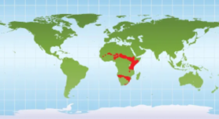
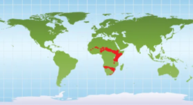
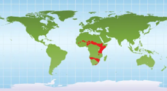
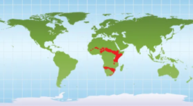

Specimen 245’s species has been tracked in only certain parts of North and South Africa (red), likely due to better availability in their food sources or shrinking numbers due to predators.
Its elongated neck, a marvel of vertebrate design, rises like a living periscope, giving it access to treetop resources no other land creature can reach. The powerful legs, at once slender and strong, move with a rolling grace that belies their height. Even Specimen 245’s patterned coat fascinates me—those irregular patches map out intricate networks of cooling and camouflage that help regulate its massive body. And then there are the eyes: enormous, gentle, and perched so high that they seem to survey entire horizons at a glance. Every detail feels like a celebration of vertical living.
My, I didn’t know you were such a fan, Gladys. Is this what the kids call ‘being a horse girl’? At any rate, Specimen 245’s environment tells us exactly why it evolved to such staggering proportions. In the sprawling savannas and open woodlands it inhabits, height is an enormous ecological advantage—one that allows access to untouched food sources and provides visual dominance over predators and terrain alike. Its long strides, steady and economical, are perfectly suited to the vast distances it must travel between water and seasonal feeding grounds. Even its coat, which you described with such excitement, mirrors the dappled interplay of sun and shade found beneath sparse tree canopies, offering surprising concealment for an animal so large. Each adaptation speaks to the pressures of a landscape defined by openness, competition, and seasonal scarcity. The Sky-Walker thrives not in spite of these challenges, but because its every feature has been sculpted to meet them.
Excerpt from the Field Journal of Derek von Stone: “Today’s trek across the savanna brought me face-to-knees with the towering legend locals call the Long Camel. The name undersells it—this creature is a walking watchtower, all legs and neck and effortless confidence. I spotted one browsing from a treetop like it was plucking fruit from a pantry shelf. When it finally noticed me, it bent that impossible neck down in a slow, deliberate sweep, studying me with those wide, thoughtful eyes. Most beasts either run or charge, but the Long Camel just… considered me, like it was evaluating whether I was interesting enough to remember. Then, with a lazy flick of its tail, it strolled off, covering more ground in a minute than I could in ten. I’ve battled through jungles and deserts, but I’ve never felt as small—and strangely honored—as when the Long Camel acknowledged me and carried on with its day.”